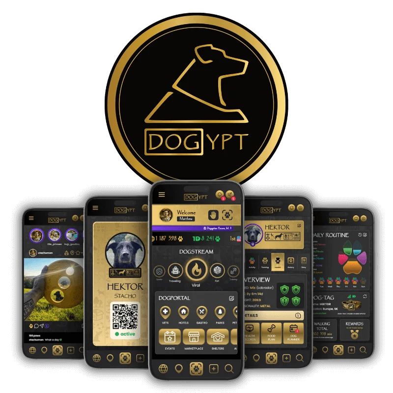

Spoločne meníme svet
Za 3 roky sme spoločne s vami zachránili množstvo psov, mačiek a iných zvierat. Každý deň prináša menšie či väčšie víťazstvá. Našim cieľom je však ísť ešte ďalej.
Sme vo fáze tvorby revolučného systému DOGYPT APP, ktorý dokáže prepojiť všetkých komunitne zmýšľajúcich psíčkarov.
"Jediný dôvod prečo vystupujem na internete je, že chcem pomáhať zvieratám a mám plán ako zachrániť psov na celom svete. Vždy stojím a budem stáť na strane zvierat." — Matej (Pán Šeliem)
